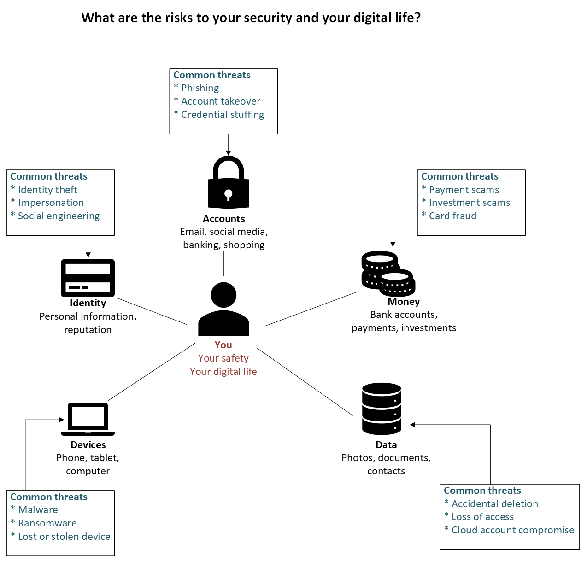

Individuals & Families
Protect personal information, devices, and online accounts.
PERSONAL CYBER SAFETY TOOLKIT
A practical toolkit designed to help individuals and families strengthen their cyber safety through account and identity protection, mobile and device security, safer online banking and shopping, scam awareness, and backup and recovery.
Overview
Many people rely on online banking, email, social media, cloud storage, mobile devices and digital services every day, but may not have a clear plan for protecting their accounts, personal information or finances, or recovering when something goes wrong. This toolkit provides practical, achievable steps to help individuals and families strengthen their cyber safety and build resilience before an incident occurs.
Toolkit 1 — Individual Cyber Resilience
Your accounts, identity, money, devices and personal data can all be exposed to different cyber threats. Toolkit 1 helps you understand those risks, strengthen your protections and improve your ability to recover when something goes wrong.

Who It's For
Protect personal information, devices, and online accounts.
Improve cyber safety habits and protect study, social, and financial accounts.
Reduce the risk of scams, fraud, identity theft, and data loss.
Protect your smartphone, mobile accounts, personal information and important data when using your phone for everyday online activities.
Preview
Cyber Security Guidance
Supporting Materials
The toolkit includes plain-language guidance, practical checklists, scoring prompts, and action planning support to help you make sensible improvements across identity protection, device security, backups, account recovery, and online safety.
Practical Toolkit
The Personal Cyber Safety Toolkit is designed for people who want to improve their cyber safety but are unsure where to begin. It provides practical, step-by-step guidance to help you review how you currently protect your accounts, devices, personal information and finances, and identify realistic improvements.
The toolkit focuses on everyday cyber risks including compromised accounts, weak authentication, account recovery gaps, unsecured devices, scams and phishing, financial and investment fraud, data loss, and inadequate backup and recovery arrangements.
It is suitable for individuals, families, students, retirees, mobile phone users, and anyone who wants a structured and practical way to strengthen their personal cyber resilience.
Includes practical prompts, scoring guidance and action planning support to help you assess your current position and prioritise improvements.
Rather than simply telling you what to do, the toolkit helps you work through your own cyber safety and resilience step by step:
Work through your cyber safety at your own pace with practical checklists, self-assessment scoring, guidance and action planning
The Personal Cyber Safety Toolkit is available as a PDF containing practical checklists, guidance, and action planning support designed to help individuals and families strengthen their personal cyber safety.
Personal Cyber Safety Toolkit - AU$39
Includes:
Version 1.1 | August 2026
Delivered electronically as a PDF within one business day of purchase.
Buy the Toolkit – AU$39Secure payment powered by Stripe. Toolkit PDFs are personally reviewed and emailed within one business day.
Need help implementing the toolkit?
One-to-one consultation is available if you'd like help interpreting your results, prioritising improvements
and developing a practical action plan.
These templates provide general guidance and should be adapted to individual circumstances. They do not constitute legal, regulatory, financial, or other professional advice.
Also Available
Identify cyber risks, strengthen preparedness and build operational resilience.
Strengthen trusted communications and manage supplier-related cyber risks.
Get all three toolkits in one package and save AU$38.